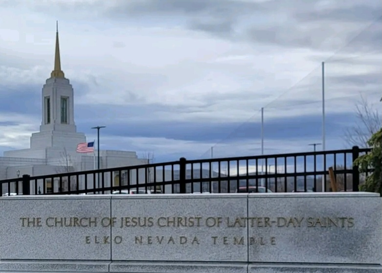

A sarced place where faithful members partipate in essential ordinances,such as eternal marriages and baptisms.
A place where ceremonies focus on drawing closed to Jesus christ and strengthening eternal family bonds .

Teckler Nozithelo Makomeke